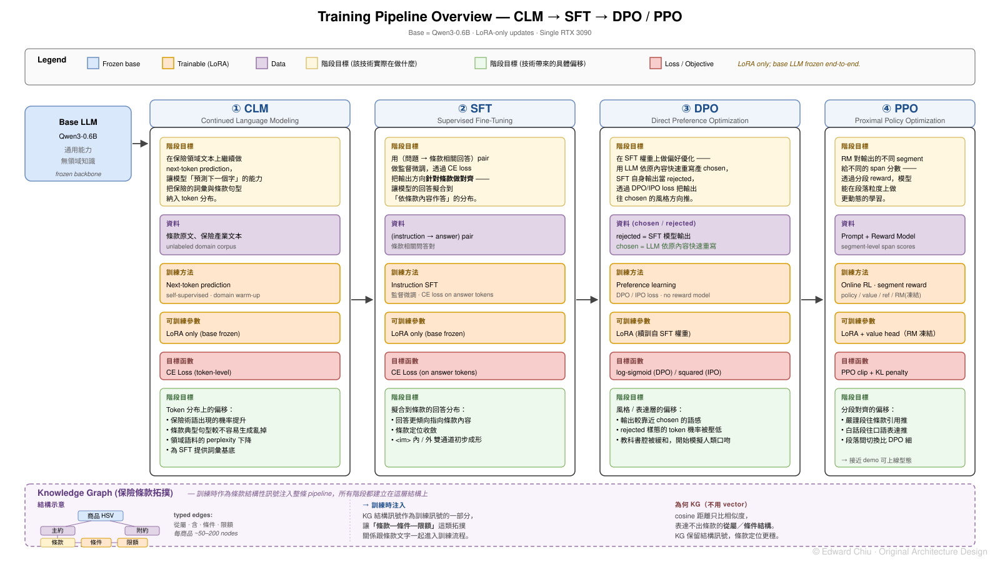
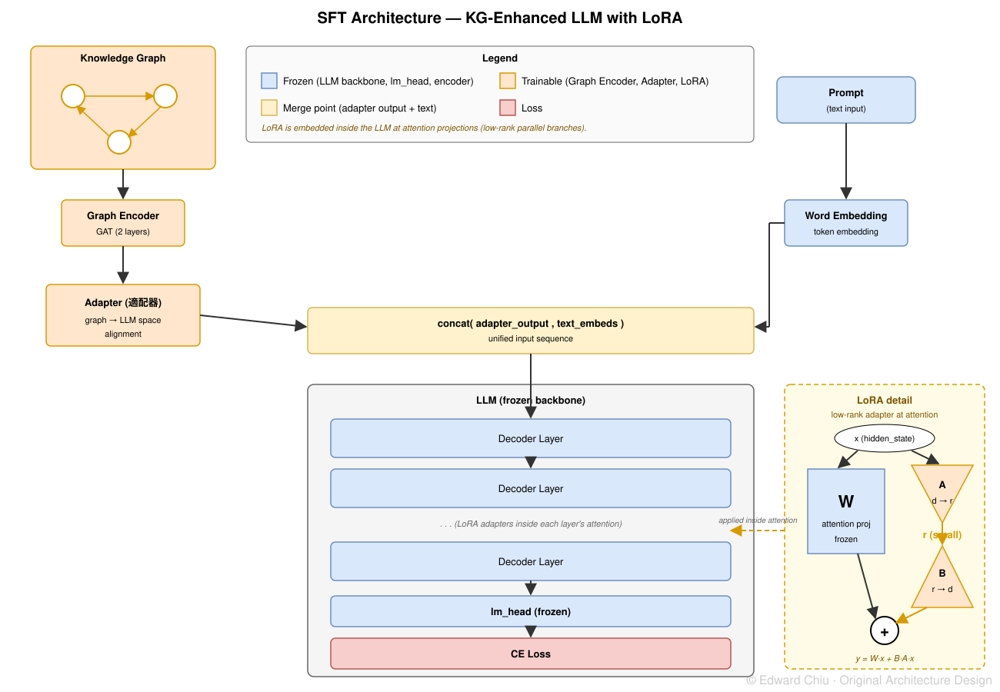

Why bother fine-tuning when Claude and GPT are already this good?Claude、GPT 都這麼強了，幹嘛還做 fine-tuning？
"Doesn't RAG already solve this? Just pull the data and hand it to
the LLM." That's the most common reaction — but it's actually
something current AI can't do.
RAG works by letting the LLM combine its own reasoning with whatever
was retrieved. The catch is that it gets stuck from both directions:
even when retrieval returns exactly the right content, the
tone and style of the answer still won't be truly professional
— because "how to phrase it" isn't something that lives in the
retrieved data. So pull in more data to compensate?
The prompt gets long, and the answer averages out across everything
in it — the actual point gets diluted. RAG's ceiling is set by
retrieval, and you hit it no matter which way you tune.
What matters more: in professional domains, the answer often has to
follow domain-specific phrasing — sometimes even a fixed order or
procedure. Law has the way it cites a statute; medicine has the way
it describes a diagnosis; insurance has the way it chains conditions
to payouts. No amount of prompt tuning gets a general model to do
this reliably. The only way to hit that level is to put those
behaviors into the training distribution itself — and that's exactly
what fine-tuning is for.
「那 RAG 不就解決了嗎？把資料撈回來給 LLM 就好啊。」
這是最常聽到的反應 —— 但這件事其實是現在的 AI 做不到的。
Domain Knowledge Internalization via KG × LLM Joint Training
Insurance Advisor as a Case Study/KG × LLM Joint Training/CLM → SFT → DPO → PPO
2026.05 — In progress2026.05 — 進行中Reimbursement-based medical insurance as case study實支實付醫療險為案例
What this project is.
Write the full insurance-domain knowledge directly into the LLM's weights —
no RAG, no external pipeline. The mechanism is
jointly training a knowledge graph (KG) with the LLM.
Using reimbursement-based medical insurance as the case study, this project
tests whether the path of "domain structural knowledge + a full training
pipeline" actually works.
Why four stages (CLM → SFT → DPO → PPO).
Each stage solves a different problem —
CLM presses insurance vocabulary and sentence patterns
into the token distribution; SFT uses (question → clause-grounded answer)
pairs to teach the model how to answer; DPO uses
preference pairs to nudge what tone to use; PPO uses
segment-level reward to fix what each segment should look like.
Skipping stages isn't a shortcut — going straight to RL produces reward
hacking (a model that can't yet speak insurance will find loopholes to
game the score); skipping DPO into PPO means making fine-grained edits
under the wrong overall policy, drifting further off with each fix.
Coarse before fine, teach before optimize — that's the design priority
of this training line.
The training line is a four-stage chain; each stage uses
the properties of the technique itself to push one "distributional shift" —
CLM brings insurance text into the next-token prediction
distribution; SFT uses (question → clause-grounded answer) pairs to do
clause-level alignment; DPO uses (chosen / rejected) pairs
to push style preference; PPO uses
segment-level reward for per-segment alignment. Every
stage trains LoRA only, with the base model frozen throughout, and every
stage does not claim "the model can really reason" — it only
discusses what the technique can shift.
Original architecture · Edward Chiu原創架構設計 · Edward Chiu

Training pipeline overview · goal and output of each stage · click to enlarge訓練流程總覽 · 每一階段的目標與產出 · 點圖可放大
① CLMContinue next-token prediction on insurance-domain text,
so the model's "predict the next token" capability absorbs
insurance vocabulary and clause sentence patterns into
the token distribution. Doesn't teach "how to answer" or "structure" —
just brings the domain corpus's perplexity down to a reasonable range,
providing a vocabulary foundation for SFT.
KG injection: KG injection runs through the entire training line as a clause-structure signal — at CLM the goal is to lay the domain-vocabulary base that the KG structural signal can connect into.在保險領域文本上繼續做 next-token prediction，
讓模型「預測下一個字」的能力把保險的詞彙與條款句型
納入 token 分布。不教「怎麼回答」、也不教「結構」——
只是讓領域語料的 perplexity 下降到合理區間，
為 SFT 提供詞彙基底。
KG 注入：整條訓練線都有 KG 注入作為條款結構訊號 —— CLM 階段先打好讓 KG 結構訊號能對接的領域詞彙底座。
② SFTSupervised fine-tuning on (question → clause-grounded
answer) pairs; the CE loss aligns the output direction with the
clauses, fitting the model to the distribution of
"answering based on clause content". The key point: this is
fitting the training distribution, not making the model
"actually reason over insurance" — that boundary has to be stated clearly,
otherwise DPO / PPO downstream have no concrete problem to solve.
KG injection: KG injection runs through the entire training line — at SFT, the clause topology signal goes into the weights together with the answer pairs.用（問題 → 條款相關回答）的 pair 做監督微調，
透過 CE Loss 把輸出方向針對條款做對齊，
讓模型擬合到「依條款內容作答」的分布。
重點在於：這是擬合訓練分布，
不是讓模型「真的會推理保險」——
這個邊界要說清楚，後面 DPO / PPO 才有要解的問題。
KG 注入：整條訓練線都有 KG 注入作為條款結構訊號 —— SFT 把條款的拓撲結構訊號跟回答 pair 一起進權重。
③ DPOPreference optimization on top of SFT weights —
chosen is produced by an LLM rapidly rewriting based on the
original content, rejected is the SFT model's own output, and
DPO / IPO loss pushes the output toward chosen's
style / expression direction. The behaviors SFT's CE
loss can't steer — tone, when to ask back, "textbook voice" —
are filled in by this preference signal. Signal granularity is per full
response, not per segment.
KG injection: KG injection runs through the entire training line — DPO performs style / expression preference optimization on top of weights that already carry KG.在 SFT 權重上做偏好優化 ——
用 LLM 依原內容快速重寫產 chosen、
SFT 自身輸出當 rejected，
透過 DPO/IPO loss 把輸出往 chosen 的風格 / 表達方向推。
SFT 沒辦法靠 CE loss 引導的「語氣 / 反問時機 / 教科書腔」，
這一層用偏好訊號補。訊號粒度是整段，不是逐段。
KG 注入：整條訓練線都有 KG 注入作為條款結構訊號 —— DPO 在已注入 KG 的權重基礎上做風格 / 表達層的偏好優化。
④ PPOA reward model gives different rewards to
different segments of the output — the key property of PPO in
this project is segment-level, not sequence-level. DPO only
compares full responses and can't reach a granularity like
"this segment should rigorously cite a clause, that segment should be
plain language"; PPO fills that granularity with segment-level reward,
letting each segment converge to its own standard. Convergence depends
on the quality of the reward model.
KG injection: KG injection runs through the entire training line — PPO uses RM span scores over each segment for more dynamic learning on top of weights that already carry KG.用 reward model 對輸出的不同 segment 給不同 reward ——
本專案 PPO 的關鍵特性是 segment-level，不是 sequence-level。
DPO 給的是「整段比較」，做不到「這段該嚴謹引條款、那段該白話」這種粒度；
PPO 用分段 reward 把這個粒度補上，
讓不同段落各自收斂到對應的標準。收斂效果仰賴 reward model 的品質。
KG 注入：整條訓練線都有 KG 注入作為條款結構訊號 —— PPO 在已注入 KG 的權重基礎上，靠 RM 對不同 segment 的 span 分數做更動態的學習。
The tradeoffs behind this order unfold across the sections that follow —
why CLM / SFT can't be skipped to go straight to RL, why DPO has to
precede PPO — and the training architecture diagrams for each stage
(the three SFT / DPO / PPO diagrams) appear in the corresponding sections.
Problem: lack of ability to lock the question問題：缺乏鎖定問題的能力
Most enterprises today handle domain questions with a general-purpose LLM
plus RAG — when the user asks, retrieval pulls relevant passages from a
document store, and the LLM organizes those into an answer. This works
well in open-domain knowledge, but in a strongly structured domain like
insurance, the answer becomes over-diffused: the AI
seemingly answers the question completely — clauses, conditions, limits
all listed — but after reading it the user can't pick out the one point
they actually wanted. Too many words, the signal diluted by noise;
"looks like an answer" isn't the same as "locked onto the question".
The root cause is that retrieval pulls back too much information, highly
fragmented. The fragmentation isn't a wrong technical choice — it's an
engineering reality: to maximize answer quality, enterprises pick the
strongest LLM (e.g. Claude Opus), but the token cost is high so the
entire clause text can't be stuffed into context. As a result a stack of
preprocessing has to be piled in between: tuning retrieval precision,
adding rerankers, hand-tuning TopK, building custom chunking rules for
different question types.
All of this is "deeply un-AI", and it can't use the same parameters for
every case — every case needs custom tuning.
目前大部分企業的做法是讓通用 LLM 搭配 RAG 處理領域問題 ——
用戶提問時，retrieval 從文件庫撈出相關段落，再交給 LLM 整理成回答。
這在開放域知識上 work 得不錯，但放到保險這種強結構領域，
回答的內容會變得過度發散：
AI 看似把問題答得很完整，條款、條件、限額一股腦全列上來，
但使用者讀完反而抓不到自己真正要的那個重點 ——
字太多、訊號被噪音稀釋，「看起來有答」不等於「鎖住了問題」。
The constraints above can be handled along three directions: either
wrap more engineering around the outside (sharper prompts,
multi-step pipelines, smarter retrievers) to prop RAG up; or
skip retrieval and internalize the domain knowledge
directly into the model weights; or take a third hybrid
path — preserve the LLM's original general reasoning while
layering a structured reasoning-and-answering capability inside a specific
domain on top. All three target the same problem but take different
stances on its root cause. This project takes the third.
This path accepts that the LLM hasn't internalized insurance knowledge but
chooses to compensate via external engineering: pre-designed prompt
templates, question classification, multi-step retrieval, result reranking,
conditional filtering — then handing off to the LLM. The goal is to make
the final answer converge on the right clauses.
Doesn't generalize無法泛用A custom answer pipeline like this can't use one set
of parameters across all scenarios — every product, every question
style, every business situation needs a targeted retune of prompt,
retrieval parameters, and flow. Engineering supports a single scenario,
but the model itself can't extrapolate to the next.這種客製化的回答 pipeline 沒辦法用一套參數通用到所有場景 ——
每個商品、每種問句風格、每個業務情境，
都得針對性調過 prompt、retrieval 參數跟 flow。
靠工程把單一情境撐起來，但模型自己沒辦法外推到下一個場景。
Doesn't address the root cause沒解根因The knowledge still lives outside, just retrieved
with more complexity — engineering complexity masks the fact that the
model hasn't internalized it. The problem hasn't disappeared, it's just
been flattened into the pipeline.知識仍在外部，只是用更複雜的方式取得 ——
把「模型沒內化」這個事實用工程複雜度遮蔽掉，
問題沒消失，只是被攤平到 pipeline 裡。
Latency increases substantially耗時顯著增加Every step of a multi-step pipeline is an LLM call —
classify → retrieve → rewrite → rerank → generate. Running the full
chain pushes user wait time far beyond a single forward pass. Inference
cost (time + token) accumulates linearly with the number of steps, and
the real-time feel of conversation gets crushed by the engineering chain.多步驟 pipeline 的每一步都要 LLM 呼叫一次 ——
問題分類 → 檢索 → 改寫 → 重排 → 生成，
整條 chain 跑下來，使用者等待時間遠長於單次 forward pass。
推論成本（時間 + token）隨步驟數線性疊加，
對話的即時感整個被工程鏈拖垮。
The industry exemplar of this path is Manus — using agent
orchestration and tool chains to scale a general-purpose LLM into a system
that handles complex tasks. Wide capability, but the underlying limits are
exactly those above: customization doesn't generalize, knowledge stays
external, every extra step adds wait time.
Path 2: internalize the domain knowledge into the weights
路徑二：把領域知識內化進模型權重
Rather than "retrieving" knowledge at inference time, "pour" it in at
training time. In current research,
"internalization" means: through training, adjust the
parameters of the model's neural layers so that the domain
knowledge itself enters the weights — letting the model produce
domain-grounded answers directly from the weights without any external
retrieval. Concretely, this moves the model's weights from a
"general knowledge" state into a "I already have an outline of the
answer to this domain's questions" state.
In practice, current research mostly avoids full fine-tuning (too
expensive) and uses parameter-efficient methods like LoRA
— training only about 0.1%–1% of the base model's
parameters (depending on rank and which layers are covered), enough to
stack a "domain knowledge patch" on top of the original model.
Inference is simple推論單純No retriever / reranker / multi-step pipeline; answer
comes out of a single forward pass.沒有 retriever / reranker / 多步驟 pipeline，一次 forward pass 出答案。
No retrieval miss無 retrieval missThe answer is recalled from parameters; there's no
"didn't fetch the key passage" failure mode.回答從參數中回憶，不存在「沒撈到關鍵段落」的失誤。
End-to-end alignable可端到端對齊The model is fully under training control, so RLHF /
DPO / PPO can be stacked on to also bake fine-grained behaviors —
"rigorous citation here", "plain language there" — directly into the
weights. RAG systems can't really do this because retrieval is a
non-differentiable step that can't be jointly reward-optimized with the
LLM.模型完全在訓練控制下，可以再接 RLHF / DPO / PPO
把「該嚴謹引條款」「該白話解釋」這類細粒度行為一起收進權重 ——
RAG 系統難做到，因為 retrieval 是非可微環節，沒辦法跟 LLM 一起 reward 優化。
But the risks this path has to honestly face go well beyond what's visible on paper:
但這條路徑要誠實面對的風險，比帳面上看到的多得多：
Capability regression能力退化Fine-tuning can cause the model to drop its original
general capability while learning the new domain
(catastrophic forgetting) — "speaks insurance well" but "can't reason
about general questions" is a recurring outcome. For an LLM whose
answer quality is propped up by general reasoning in the first place,
this is a real cost.Fine-tuning 過程可能讓模型在學新東西的同時，
丟掉原本的通用能力（catastrophic forgetting）——
模型「會講保險」但「不會推理一般問題」的情況時有所聞。
對一個本來就是靠通用推理能力撐起回答品質的 LLM 來說，這是真實的成本。
Training instability訓練不穩定Parameter tuning itself carries risk: over-fitting,
regression on certain tasks, loss converging while actual generation
gets worse. The whole training process needs evaluation metrics
verified repeatedly to confirm no regression — "ran an epoch" isn't
"trained successfully".參數調整本身就有風險：可能 over-fit、
可能在某些任務上反而變差、可能 loss 收斂但實際輸出退步。
整個訓練過程要靠評估指標反覆驗證才能確定沒有退化，
「跑完一輪」不等於「訓練成功」。
Data-quality cost資料品質成本Bad data gets written straight into the weights — far
more serious than RAG retrieving a bad document. RAG can be fixed by
editing the source document; an error baked into the weights needs
another training run to correct. Data-cleaning standards have to be
very high, and producing quality SFT / preference data often costs more
than the training itself.壞資料會被直接寫進權重，後果比 RAG 撈到壞文件嚴重得多 ——
RAG 改文件就能改，內化進權重的錯誤要再做訓練才修得掉。
data cleaning 的標準必須拉到很高，
高品質 SFT / preference 資料的整理成本，往往比訓練本身還高。
Updates require retraining更新需再訓練When a clause changes, you have to retrain — unlike
RAG, where you just edit the document.條款一變要再做訓練，不像 RAG 改文件就好。
Path 3: hybrid architecture (this project's path)
路徑三：混合架構（本專案路徑）
Path 1 uses external engineering to mask the fact that the model hasn't
internalized the domain, but the answers diffuse and responses are slow;
Path 2 internalizes knowledge into the weights but has to absorb real
costs in capability regression, training instability, and data quality.
Neither is enough — this project explores a third path:
neither pure fine-tuning nor pure RAG, but a hybrid architecture aiming
to preserve the LLM's original general reasoning while
giving it, inside a specific domain, both a structured reasoning
path and the ability to lock onto the question.
The tradeoff behind it: pure fine-tuning easily produces "speaks
insurance, forgot how to reason"; pure RAG produces "reasons fine, never
nails the clause structure". The hybrid architecture is designed to keep
both — general reasoning stays on the rails of the original model
weights, and the domain's structural knowledge enters the model through
additional training signals (the KG, discussed below, being one key
component) in a controlled way: not overwriting the original capability,
while still producing convergent answers on domain questions.
Freeze the LLM, train only LoRA凍結 LLM、只訓 LoRAAn LLM's parameters are highly coupled (capability
entanglement) — touching the original weights casually risks degrading
general capability in places you can't see. So this project
freezes the original model weights and trains only
LoRA's low-rank updates, keeping "modifying the base parameters" off
the table from the start. If the signal design and training pipeline
are later validated as stable enough, gradually unfreezing some weights
for larger updates isn't ruled out — but that's a question for later.LLM 內部的參數是高度耦合的（capability entanglement）——
擅自調整原權重，容易在你沒看到的地方造成通用能力退化。
所以本方案先凍結原模型權重，只訓練 LoRA 的低秩更新，
把「動原參數」的風險先擋在門外。
未來如果訊號設計跟訓練流程被驗證夠穩定，
不排除逐步解凍部分權重做更大幅度的更新 ——
但那是後面才該問的問題。
LoRA as a low-risk probeLoRA 當低風險試金石A technical clarification first: LoRA is
not a "scaled-down version" of the original model —
"low rank" refers to the update matrix being low rank
(ΔW = BA); the original weights stay frozen and unchanged. LoRA's real
role on this path is as a low-cost, low-risk probe:
with a relatively small amount of data, first verify whether the
"KG injection method + training pipeline" can improve the model on
domain questions without harming general capability. Only if LoRA works
does the question of "whether to unfreeze more of the LLM" become worth
asking; if LoRA itself doesn't work, unfreezing only amplifies the
problem.先做個技術澄清：LoRA 不是原模型的「微縮版」——
它的低秩特性指的是更新矩陣是低秩的（ΔW = BA），
原模型權重不變、被凍結。
它在這條路徑的真正角色是低成本、低風險的試金石：
用相對少的資料量先驗證「KG 注入方法 + 訓練流程」
能不能讓模型在領域問題上進步、又不傷到通用能力。
LoRA 跑得通，「要不要進一步解凍 LLM」這個問題才值得問；
連 LoRA 都跑不通的話，直接解凍只會把問題放大。
Use KG injection instead of long context用 KG 注入取代長 contextThis approach uses knowledge-graph
injection jointly trained with the LLM, replacing the
conventional long-text approach of "stuffing the full clause text /
training material into context". The thinking borrows from RAG's core
advantage in retrieval — when the signal fed to the model at training
time is already structured and anchored to the correct
clauses, the impact on generation is far more direct than
feeding flat text. A KG also expresses topological relations like
"clause — condition — limit" more precisely than flat text. Two things
have to be done right: (a) the graph structure is built correctly,
(b) the model can read and use that graph structure — these two are
the core propositions this path has to validate.本方案採用知識圖譜注入跟 LLM 做聯合訓練，
取代「把整段條款／教材直接丟進 context」這種傳統長文本做法。
背後的思路借鑒 RAG 在 retrieval 上的核心優勢 ——
當訓練時餵給模型的訊號是已經結構化、定錨在正確條款上，
對 generation 的影響比餵一段平鋪文本直接得多。
KG 在表達「條款—條件—限額」這種拓撲關係上又比平面文本精確。
前提是兩件事得做對：
（a）圖結構建得正確、
（b）模型能讀懂並利用這個圖結構 ——
這兩件事是這條路徑要驗證的核心命題。
The concrete training pipeline and structural-signal design are the topic
of the next several sections: how the KG is jointly trained with the LLM,
why the order is CLM → SFT → DPO → PPO, what specific sub-problem each
stage solves, and how general capability is monitored throughout to
ensure it isn't eaten away.
Training pipeline: why start from CLM / SFT訓練流程：為什麼從 CLM / SFT 開始
To turn the base model into a usable insurance advisor, the training
pipeline in the middle can't skip stages. Each stage does something
different; if any one is missing, the downstream stages run into trouble.
The next three sections (SFT / DPO / PPO) each include a
training architecture diagram —
all three are original training architectures I designed for the
insurance-advisor scenario, and one of the core research outputs
of this project. Read each diagram together with its section; the figure
explains the data flow, where the loss is computed, and which parts LoRA
updates faster than the text. Every diagram can be clicked to
enlarge for detail.
要讓 base model 變成一個能用的保險顧問，
中間的訓練流程不能跳階段。每一階段做的事情不同，
少了任何一步，後面的階段都會出問題。
Do next-token prediction on domain text (raw clause text, typical phrasing
from the insurance industry) so the base model becomes familiar with the
domain's vocabulary, syntax, and clause structure. This stage
doesn't teach "how to answer", only "what insurance's language
looks like" — it's a warm-up, repairing the base model's fragile
internal representations for terms like "coverage cap" and "waiting period"
so the later stages have stable ground to stand on.
用領域文本（條款原文、保險產業常見表述）做 next-token prediction，
讓 base model 熟悉保險領域的詞彙、句法與條款結構。
這個階段不教「該怎麼回答」，只教「保險的語言長什麼樣」 ——
暖身用，把通用 base model 對「給付上限」「等待期」這類術語
脆弱的內部表徵先補起來，後面階段才有穩的地基可以站。
SFT · Goal
SFT · 目標
SFT is the core stage where new knowledge actually gets
internalized into the weights — if this layer isn't done right,
no amount of RL alignment downstream can save it.
Several things have to be done correctly at this stage:
SFT 是新知識真正內化進權重的核心階段 ——
這層做不好，後面再多 RL 對齊都救不回來。
有幾件事在這個階段必須做對：
Instruction SFT is mandatory指令 SFT 是必做動作Organize the data into (instruction / user question
→ answer) pairs, and train with cross-entropy loss (CE loss) to fit the
model to the target answer. At each token position, the model learns
"given the prior context, what should the next token be"; aggregated,
this presses the domain knowledge into the weights —
this is mainly where learning new knowledge happens.把資料整理成（指令 / 使用者問題 → 回答）的 pair，
用cross-entropy loss (CE Loss) 訓練模型擬合到目標回答。
模型在每個 token 位置上學到「給定前面的 context，下一個 token 該是什麼」，
累積起來就把領域知識壓進了權重 ——
學習新知識的工作主要就在這個階段發生。
Data quality goes straight into the weights資料品質直接寫進權重CE loss has no judgment — whatever you feed it, it
fits. Bad data, structurally misaligned answers, fuzzy clause citations
— all get learned into the weights verbatim. This is exactly why this
project uses KG injection rather than piling on raw
long text — the training signal itself has to be structurally correct;
we can't rely on the model to infer the clause topology from a heap of
flat text on its own.CE loss 沒有判斷力，你餵什麼它擬合什麼。
壞資料、結構錯位的回答、含糊的條款引用，都會被原封不動學進權重。
這也是本專案用 KG 注入而不是直接堆原始長文本的原因 ——
訓練訊號本身就要在結構上是正確的，
不能指望模型自己從一堆平面文本裡推斷出條款的拓撲關係。
SFT teaches, it doesn't correctSFT 是「教會」、不是「修正」SFT can only imitate the training data: it picks up
the good parts, and it picks up the biases (over-assurance, giving an
answer when it should ask back, wrong clause-citation granularity)
wholesale. Preference issues at this layer are for downstream DPO and
PPO to handle — it isn't SFT's responsibility.SFT 只能模仿訓練資料：資料裡好的它學，
資料裡的偏誤（過度保證、該反問卻直接給答案、條款引述粒度錯誤）
它也照單全收。
這個層級的偏好問題交給後面的 DPO 跟 PPO 處理，
不是 SFT 該扛的責任。
SFT · Architecture
SFT · 架構
LoRA + KG injection: a GAT encoder turns the insurance-clause graph
structure into an embedding, which an adapter feeds onto the LLM's input
sequence, going through training together with the clause text. CE loss
is computed on the answer tokens; the base LLM is frozen — only LoRA +
graph encoder + adapter are trained.
LoRA + KG 注入：GAT 編碼器把保險條款的圖結構轉成 embedding，
透過 adapter 接到 LLM 的輸入序列上，跟條款文字一起進訓練。
CE Loss 在 answer tokens 上計算，base LLM 凍結、只訓 LoRA + Graph Encoder + Adapter。
Original architecture · Edward Chiu原創架構設計 · Edward Chiu

SFT training architecture · LoRA + KG injection · click to enlargeSFT 訓練架構 · LoRA + KG 注入 · 點圖可放大
SFT · Output example (initial effect of KG injection)
SFT · 輸出範例（KG 注入的初步效果）
SFT alone is already enough to verify one key thing —
KG injection does change the model's output pattern.
Below are two outputs from the same SFT weights on
the same prompt; the only variable is "whether the
KG triples are injected through the PLA and SP paths". It's a clean
single-variable comparison that shows the qualitative difference KG brings.
Note: dialogue samples are the model's actual Chinese-language output;
English translations are provided for readability.
SFT 階段已經能驗證一件關鍵的事 ——
KG 注入確實改變了模型的輸出 pattern。
下面是同一份 SFT 權重對同一個提問的兩份輸出，
唯一變數是「KG triples 有沒有注入到 PLA 跟 SP 路徑」。
這是一個乾淨的單變數對照，能直接看到 KG 帶來的質性差別。
I looked at this HSV policy — coverage seems good, but the monthly premium is close to NT$6,000 and my monthly salary is NT$75,000. Is this budget allocation reasonable?我看了這張HSV的保單，保障好像不錯，但月繳快六千，我月薪七萬五，這樣預算分配合理嗎？
SFT · without KG injectionSFT · 無 KG 注入
✗ No advisor internal reflection✗ 無顧問內心反思✗ Misread the salary figure✗ 讀錯月薪數字✗ Markdown bullet style✗ markdown 條列✗ Didn't ask back for missing info✗ 沒反問補資訊
SFT · with KG injection (L14 + L26 + SP)SFT · 有 KG 注入（L14 + L26 + SP）
✓ <im> advisor inner reflection✓ <im> 顧問內心反思✓ Recognizes information gaps✓ 識別資訊缺口✓ Reads NT$75k salary correctly✓ 月薪 7.5 萬抓對⚠ close tag missing (PPO fixes)⚠ close 未收（PPO 解）
<im>他提供月薪和保費佔比，但沒說年齡、性別及婚姻狀況，也沒有提到計劃類型或已投保其他險項。我需要先確認這些基本資訊才能評估適配性。我該用問題法先徵求這些關鍵數據，避免誤導客戶到錯誤的建議。
[後續 close 未收 + 訓練 pad 殘留會在 PPO 階段修掉]
KG triples injected into the model (3 path groups)注入到模型的 KG triples（3 組路徑）
L14 surface (dialogue anchor → action style)
I → [cite] → male 56–60 Plan 3, monthly NT$5,860
I → [disclose] → the fact that the ratio is too high
L26 deep (reasoning anchor → clause / rate alignment)
rate → [compare to] → male 56 Plan 3, monthly NT$5,860
budget ratio → [exceeds] → 3–5% reasonable range
recommendation → [downgrade] → Plan 2 or Plan 1 to lower premium ratio
SP persona (advisor identity soft prompt)
I → [principle] → honestly disclose limits, including terms unfavorable to the client
I → [refuse to do] → don't exaggerate coverage to close, don't hide exclusions
I → [specialist product] → Fubon Life HSV one-year hospital medical rider
Takeaway: with the same SFT weights, once the KG triples
enter the model through the PLA + SP paths, the output shifts from
"generic bullet-list answer" into "advisor inner reflection + recognizing
the client's information gaps". What KG changes is the
structural prior of the answer, not the knowledge
itself. The close-tag failure + pad residue are SFT's own bugs and get
fixed in the next section by PPO.
Takeaway：同一份 SFT 權重，KG triples 走 PLA + SP 路徑進到模型後，
從「通用條列式回答」轉成「顧問腦內反思 + 識別客戶資訊缺口」的輸出。
KG 改的是回答的結構先驗，不是知識本身。
close 失敗 + pad 殘留是 SFT 自身的 bug，下一節 PPO 會修。
Alignment: what DPO and PPO each solve對齊階段：DPO 跟 PPO 各自解什麼
The post-SFT model can talk, but two classes of problems remain:
preference misalignment (the advisor should proactively
ask back about the client's needs, but the model often just gives an
answer) and fine-grained errors (places that should
rigorously cite a clause become plain language; places that should be
plain language become clause-quoting). DPO and PPO handle these two
separately.
DPO is conceptually simple: prepare (chosen / rejected) pairwise data and
use a loss function to push the model directly toward chosen — no reward
model needed, training is stable, cost is low. On paper it looks like the
easiest method to pick up among offline RL approaches.
But after running it on this project, the most counterintuitive lesson:
having chosen and rejected doesn't mean DPO trains well.
The gap between them can't be too large, and the
data distribution matters more than the mere existence of
pairs — staring at the margin on the training curve almost
guarantees being misled.
The conclusion this project landed on: DPO's training state has to be watched on three layers at once; missing any one will hurt.
DPO 在概念上很單純：準備（chosen / rejected）的成對資料，
用 loss function 讓模型直接往 chosen 那邊靠 ——
不需要訓練 reward model，訓練穩定、成本低，
帳面上看起來是 offline RL 裡最好上手的方法。
Data layer資料層Watch the chosen / rejected |Δlen|
(length gap) and quality gap. Too large a length gap →
DPO learns the shortcut signal "long = good"; too large a quality gap →
rejected is too easy to tell apart and the model never learns the fine
details of preference. Both have to be kept in a reasonable range for
the pairs to actually "teach the model to distinguish preference".看 chosen / rejected 的 |Δlen|（長度差）跟 quality gap（品質差）。
長度差過大 → DPO 學到的是「長 = 好」的捷徑訊號；
品質差過大 → rejected 太容易被區分，模型壓根學不到細部偏好。
這兩個都要控制在合理區間，pair 才是真正在「教模型分辨偏好」。
Training layer訓練層Watch margin (the log-prob gap between
chosen and rejected), but treat it only as a reference signal,
not ground truth. A steady rise in margin only means the optimizer is
moving; it doesn't mean the direction is correct — the model might just
be pushing down the token probability of the rejected pattern without
actually improving generation toward chosen.
A single margin number is misleading — this is DPO's
most common pitfall.看 margin（chosen vs rejected 的 log-prob 差），
但只能當參考訊號，不是 ground truth。
margin 平穩上升只代表優化在動，不代表方向是對的 ——
模型可能只是把 rejected 樣態的 token 機率壓低，
對 chosen 的生成能力沒有實質提升。
單一 margin 數字會誤導，這是 DPO 最容易踩的坑。
Generation layer生成層It has to ultimately land on
custom generation-stage metrics — signals like
sem_full (semantic completeness) and has_surf
(surface-level clause citation rate) that align directly with the
domain goal. If this layer passes, the numbers in the previous two
layers actually mean something; if it fails, those numbers are all
self-soothing.最後一定要落到生成階段的自訂指標來驗證 ——
像 sem_full（語意完整度）、has_surf（條款表層引用率）這類
跟領域目標直接對齊的訊號。
這層過了，前兩層的數字才有意義；
這層沒過，前兩層全是自我安慰。
So although DPO is an offline stage that on the surface "runs as long as
you have data", having the pairs ready is an admission ticket,
not a pass. Length distribution, quality gap, training
monitoring, generation verification — every layer needs an independent
gate; relying on a single metric on any one layer leads to misjudgment.
DPO itself has a more fundamental limit: signal granularity is "compare
full responses" — it knows A is better than B, but not which segment of
A makes it better. That's not enough for some fine-grained preference
problems, which is what the next stage, PPO, handles.
DPO 本身還有一個更根本的限制：訊號粒度是「整段比較」 ——
它知道 A 比 B 好，但不知道好在 A 的哪一段。
對某些細粒度的偏好問題不夠，這層交給後面的 PPO 處理。
DPO · Architecture
DPO · 架構
Continues training from SFT weights: (chosen / rejected) pairs go through
both the policy and the reference model to compute their log-probs, and
the preference loss is computed with log-sigmoid (DPO) or squared loss
(IPO) — no reward model. KG doesn't enter this layer directly; preference
optimization sits on top of the clause structure already internalized in
SFT, and DPO only moves the style distribution.
Planned comparison: same prompt on SFT ckpt vs DPO ckpt — token-probability
suppression of the rejected pattern, absorption of the chosen style, and
concrete changes in tone naturalness. Also a correlation check between
the margin training curve and generation-layer custom metrics
(sem_full / has_surf).
Use a reward model to score the model's output. The key difference: the
reward here isn't a single score for the full response — it
assigns different rewards to different segments of the output,
so the model learns different standards for different parts of the
response — rigorous reward where rigor is needed, plain-language reward
where plain language is needed.
This is the granularity DPO can't easily reach. The price is higher
training cost than DPO, and it requires SFT and DPO to have already
pushed down the coarse-grained issues — only then can PPO converge
stably on fine-grained refinement.
Four models participate simultaneously — policy / value / reference / RM
— with PPO clip + KL penalty controlling policy drift. The key property of
this project: RM assigns different rewards to different
segments of the output (rather than a single score for
the whole response), letting the model converge per segment to the
corresponding standard.
The order matters. DPO first aligns the overall preference (the
advisor's role positioning, the answering flow); PPO then performs
per-segment refinement (what each segment should look like). If you
start PPO before the overall preference is aligned, the model is doing
fine-grained edits under the wrong overall policy — the more it edits,
the further from ideal it drifts. Coarse before fine: that's the design
priority of this training line.
PPO · Output example (vs SFT, same prompt side-by-side)
PPO · 輸出範例（vs SFT，同題並排）
The two samples below are outputs on the same prompt
from the SFT ckpt and the PPO ckpt; all other conditions (KG triples,
generation parameters, prompt) are identical — the only variable is
whether PPO's segment-level reward stage was applied.
Compare the red ✗ marks on SFT to the green ✓ marks on PPO to see
directly which specific bugs PPO fixed on this model.
Note: dialogue samples are the model's actual Chinese output.
I looked at this HSV policy — coverage seems good, but the monthly premium is close to NT$6,000 and my monthly salary is NT$75,000. Is this budget allocation reasonable?我看了這張HSV的保單，保障好像不錯，但月繳快六千，我月薪七萬五，這樣預算分配合理嗎？
Takeaway: on this sample PPO fixed two bugs at once —
close failure (</im> never closes, the internal
reflection runs all the way to a truncated end) and pad-fix-residue
fake-turn injection (the model treats training-time padding as a new
user turn). Both are fine-grained issues SFT's CE loss can't fix — they
need a reward signal to correct.
Takeaway：PPO 在這條 sample 上同時修了兩個 bug ——
close failure（</im> 收不回來，內心反思一路寫到斷尾）跟
pad-fix 殘留導致的 fake-turn 注入（模型把訓練時的 padding 當成新一輪 user input）。
兩個都是 SFT CE loss 訓不出來的、要靠 reward signal 才能修的細粒度問題。
A friend said reimbursement-based hospital insurance is very useful and recommended Fubon HSV. But the premium is close to NT$3,000 per person — is it really worth it? If I'm hospitalized, how much can it pay out?朋友說實支實付住院很實用，推薦我買富邦 HSV。但保費一個人快三千，真的值得嗎？如果住院能賠多少？
SFT (before PPO)SFT（before PPO）
✗ </im> not closed✗ </im> 未收✗ Residual English tokens✗ 英文 token 殘留✗ Markdown bullet style✗ markdown 條列風
Takeaway: SFT's output reads like "lay out the spec"
(limit 100%, rate calculation requires…); after PPO it becomes a
"conversational advisor" (this is a great question to consider… mind
if I ask first…) — an overall shift in output style,
not a single-token replacement. ZH/EN mixing like "實支實 pay" is
residual from the base model's own token distribution — not something
the RL layer can solve; only swapping the base model makes it go away
for good.
Takeaway：SFT 的輸出像是「把規格條列出來」（限額 100%、費率計算需…），
PPO 後變成「對話式顧問」（這問題挺關心的…方便先問一下…）——
是輸出風格的整體轉變，不是單一 token 替換。
「實支實 pay」這種中英混雜是 base 模型自身 token distribution 的殘留，
非 RL 層面能解的問題，要換 base model 才會徹底消失。
Demo UI
The final output of the whole training pipeline is an interactive demo —
the top half is a live-rendered knowledge-graph
visualization that draws the clause structure the model uses
inside its weights; the bottom half is a conversational
interface where you can question the trained model and watch
how it answers. Built in Streamlit so iteration cycles and external
demos can run quickly.
Training method訓練方法Parameter-efficient fine-tuning via
QLoRA — the base model stays frozen throughout, only
the low-rank update layers are trained. Feasibility verification
currently runs on a small base LLM; the same training line will be
re-run on a larger model later.透過 QLoRA 做 parameter-efficient 微調 ——
base model 全程凍結，只訓練低秩更新層。
目前在小型 base LLM 上做可行性驗證，後續會在更大模型上重跑同一條訓練線。